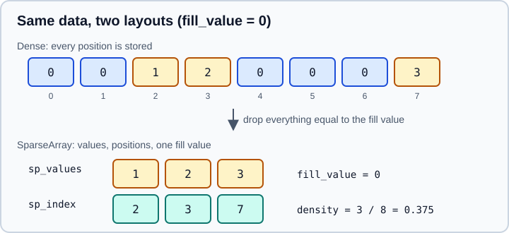

Sparse Data
|
This content was generated with the assistance of AI and should be verified against the official documentation before being relied on in production. |
This page targets pandas 3.1 on Python 3.13 or 3.14 with NumPy 2.5 and SciPy 1.x, and was checked in October 2026. Every example was run on pandas 3.1.0. Sizes are exact byte counts reported by memory_usage, and timings come from one laptop.
A sparse array does not store the values that are equal to a chosen fill value. When most of an array is that one value, such as zeros in a one-hot table or missing values in a mostly empty column, the memory saving is large. The official Sparse data structures guide stresses that "sparse" here means repeated values, not necessarily zeros: you may choose zero, NaN or any other scalar as the fill value.
Sparse storage is a memory optimisation with a break-even point and a few surprises, so this page measures both. For other ways to reduce memory, see Scaling to Large Datasets. For one-hot encoding in models, see Encoding Categorical Features and Feature Extraction: Text, Dicts & Hashing, where sparse matrices are the usual output.
What is stored
A SparseArray keeps three things: the stored values (those that differ from the fill value), the positions of those values, and the fill value itself.

The figure is an original drawing of the structure described in the official guide. The attributes of the same names exist on the object: sp_values, sp_index and fill_value. The quantity that matters is the density, the fraction of positions that are stored.
Creating sparse data
pd.arrays.SparseArray is the one-dimensional extension array. Wrap it in a Series, or build one with pd.array and a dtype.
import numpy as np
import pandas as pd
arr = np.random.default_rng(0).normal(size=100_000)
arr[arr < 1.5] = np.nan # about 93 percent missing
ts = pd.Series(pd.arrays.SparseArray(arr))
print(ts.dtype)
print(f"density : {ts.sparse.density:.4f}")
print(f"fill_value: {ts.sparse.fill_value}")
print(f"dense : {pd.Series(arr).memory_usage() / 1e3:.0f} kB")
print(f"sparse : {ts.memory_usage() / 1e3:.0f} kB")
sa = ts.array # the SparseArray itself
print(type(sa).__name__, sa.sp_values[:3], sa.sp_index.indices[:3])
print(sa.npoints, sa.nbytes)
# a fill value other than NaN
z = pd.arrays.SparseArray([0, 0, 1, 2, 0, 0, 0, 3], fill_value=0)
print(z.dtype, z.density, z.sp_values, z.sp_index.indices)
print(np.asarray(z))
# dtype objects and string aliases
print(pd.SparseDtype(float), pd.SparseDtype("int64", 0))
print(pd.array([1, 0, 0, 2], dtype="Sparse[int]").dtype)Output:
Sparse[float64, nan] density : 0.0660 fill_value: nan dense : 800 kB sparse : 79 kB SparseArray [1.51392377 1.96025832 1.80163487] [41 47 48] 6602 79224 Sparse[int64, 0] 0.375 [1 2 3] [2 3 7] [0 0 1 2 0 0 0 3] Sparse[float64, nan] Sparse[int64, 0] Sparse[int64, 0]
Source: SparseArray and SparseDtype.
-
A
SparseDtypecarries two pieces of information: the dtype of the stored values, and the scalar fill value.Sparse[float64, nan]means float64 values compressed againstNaN. -
If you give no fill value, pandas picks a default for the value dtype:
NaNfor floats,NaTfor datetimes. For integers you should state0or another value explicitly, because there is no integerNaN. -
np.asarray(sparse_array)returns an ordinary dense NumPy array, and so doesto_dense(). -
Here the dense column took 800 kB for 100,000 floats and the sparse one 79 kB, a factor of ten, at a density of 6.6 percent.
The break-even point
Each stored value costs its own bytes plus an integer index. For float64 values and a 32-bit position index, that is 12 bytes per stored value, against 8 bytes per value in a dense array. The sparse form wins only when the density is below about two thirds.
import numpy as np
import pandas as pd
rng = np.random.default_rng(3)
for keep in (0.01, 0.1, 0.3, 0.5, 0.9):
x = np.where(rng.random(1_000_000) < keep, rng.random(1_000_000), 0.0)
dense = pd.Series(x).memory_usage(index=False)
sparse = pd.Series(pd.arrays.SparseArray(x, fill_value=0.0)).memory_usage(index=False)
print(f"density {keep:4.2f}: dense {dense / 1e6:5.2f} MB sparse {sparse / 1e6:5.2f} MB")Output:
density 0.01: dense 8.00 MB sparse 0.12 MB density 0.10: dense 8.00 MB sparse 1.19 MB density 0.30: dense 8.00 MB sparse 3.60 MB density 0.50: dense 8.00 MB sparse 5.99 MB density 0.90: dense 8.00 MB sparse 10.80 MB
Source: the memory model follows Sparse data structures; the byte counts are measured with Series.memory_usage.
At 90 percent density the sparse form is larger than the dense one. The fill value also matters as much as the density: the fill value must be the value that is actually frequent. Choosing zero for data where most entries are one gives a dense-looking array with a large index. Check density right after you convert, and keep the dense form if it is above roughly 0.5.
Converting dense data
Convert with astype and a SparseDtype. This works for a Series and for a whole DataFrame, and sparse.to_dense() reverses it.
import numpy as np
import pandas as pd
rng = np.random.default_rng(1)
df = pd.DataFrame(rng.random((1000, 5)))
df[df < 0.9] = 0
sdf = df.astype(pd.SparseDtype("float", 0.0))
print(sdf.dtypes.unique().tolist())
print(f"density {sdf.sparse.density:.3f}")
print(f"dense {df.memory_usage().sum() / 1e3:.1f} kB, sparse {sdf.memory_usage().sum() / 1e3:.1f} kB")
back = sdf.sparse.to_dense()
print(back.dtypes.unique().tolist(), back.equals(df))
# the DataFrame accessor needs every column to be sparse
mixed = pd.DataFrame({"a": pd.arrays.SparseArray([0, 0, 3, 0], fill_value=0), "b": [1, 2, 3, 4]})
try:
mixed.sparse.density
except AttributeError as exc:
print("AttributeError:", exc)
print(isinstance(mixed["a"].dtype, pd.SparseDtype), isinstance(mixed["b"].dtype, pd.SparseDtype))Output:
[Sparse[float64, 0.0]]
density 0.099
dense 40.1 kB, sparse 6.1 kB
[dtype('float64')] True
AttributeError: Can only use the '.sparse' accessor with Sparse data.
True False
The .sparse accessor exists on a Series of sparse dtype and on a DataFrame whose columns are all sparse, like .str, .cat and .dt for their types. Its useful members are density, fill_value, npoints, sp_values, to_dense() and to_coo(). A frame that mixes sparse and dense columns has no accessor, as the error above shows. To test a dtype, use isinstance(dtype, pd.SparseDtype): the older helper pd.api.types.is_sparse is deprecated and emits a Pandas4Warning.
One-hot encoding with get_dummies
pd.get_dummies is the most common source of very sparse data: one column per category, with exactly one non-zero value per row. The sparse=True argument builds sparse columns directly instead of a large dense table.
import numpy as np
import pandas as pd
rng = np.random.default_rng(1)
cats = pd.DataFrame({"colour": rng.choice(list("abcdefghij"), size=20_000)})
dense_d = pd.get_dummies(cats, dtype="float")
sparse_d = pd.get_dummies(cats, sparse=True, dtype="float")
print(dense_d.memory_usage().sum() // 1000, "kB dense;", sparse_d.memory_usage().sum() // 1000, "kB sparse")
print(sparse_d.dtypes.iloc[0])Output:
1600 kB dense; 240 kB sparse Sparse[float64, 0.0]
Source: pandas.get_dummies.
With 10 categories each row has one stored value out of 10, a density of 10 percent, so the sparse table is 1/6 of the dense one. With more categories the ratio grows. See Melt, Stack & Explode for the reshaping functions around get_dummies.
Operations and what they keep
Operations are designed to keep data sparse where that is correct. NumPy ufuncs and arithmetic with scalars are applied to the stored values and also to the fill value, because the fill value stands for all the compressed positions.
import numpy as np
import pandas as pd
a = pd.Series(pd.arrays.SparseArray([0, 0, 1, 0, 2], fill_value=0))
print((a + 1).dtype) # the operation is also applied to the fill value
print((a * 2).dtype, a.sum(), a.max())
print(np.abs(a).dtype) # ufuncs return a SparseArray
print(a.astype(float).dtype) # astype to a plain dtype densifies
print(a.astype(pd.SparseDtype(float, 0.0)).dtype)
print(a.to_numpy().dtype, a.sparse.to_dense().tolist())
print(a.loc[a > 0].dtype) # boolean masks keep the sparse dtypeOutput:
Sparse[int64, np.int64(1)] Sparse[int64, np.int64(0)] 3 2 Sparse[int64, 0] float64 Sparse[float64, 0.0] int64 [0, 0, 1, 0, 2] Sparse[int64, 0]
Source: SparseArray, which shows that np.abs also changes the fill value so that the dense result is correct.
Read the first line carefully. Adding 1 produced a new fill value of 1, not a dense array: every compressed position now means 1, and the stored positions hold their old value plus one. That preserves memory but changes which value is "free". A chain of operations can therefore move the fill value away from the common value in the data, and the result may be larger than expected. Check density after a transformation, not only before it.
astype(float) returned a plain dense float64 Series. To stay sparse you need astype with a SparseDtype, as the fifth line shows. Many operations that do not have a sparse-aware implementation also fall back to a dense conversion, which can use a lot of memory for a large sparse array. The official guide describes sparse objects as nearly identical in behaviour to dense ones, which is not a promise that every method keeps them sparse.
Timing shows where sparse storage helps and where it does not:
import time
import numpy as np
import pandas as pd
rng = np.random.default_rng(3)
x = np.where(rng.random(1_000_000) < 0.01, rng.random(1_000_000), 0.0)
sp = pd.Series(pd.arrays.SparseArray(x, fill_value=0.0))
dn = pd.Series(x)
for label, fn in [("dense sum", dn.sum), ("sparse sum", sp.sum),
("dense * 2", lambda: dn * 2), ("sparse * 2", lambda: sp * 2)]:
t0 = time.perf_counter()
for _ in range(20):
fn()
print(f"{label:<12}{(time.perf_counter() - t0) / 20 * 1000:7.3f} ms")Output:
dense sum 0.191 ms sparse sum 0.010 ms dense * 2 0.157 ms sparse * 2 0.024 ms
Source: measured with the Series.sum and arithmetic operators documented at Sparse data structures.
At 1 percent density, reductions and scalar arithmetic touch 1 percent of the values and are faster than dense code, besides using a fraction of the memory. These two operations are not representative of every method: row selection, joins and sorting were not measured here, so measure the operations you actually use.
SciPy sparse matrices
pandas and SciPy exchange sparse data without a dense intermediate. DataFrame.sparse.from_spmatrix builds a sparse DataFrame with one column per matrix column, DataFrame.sparse.to_coo goes the other way, and a Series with a two-level MultiIndex converts to a COO matrix with Series.sparse.to_coo and back with Series.sparse.from_coo.
import numpy as np
import pandas as pd
import scipy.sparse
mat = scipy.sparse.random(8, 4, density=0.25, format="csr", random_state=0)
# SciPy matrix -> sparse DataFrame -> SciPy matrix
sdf = pd.DataFrame.sparse.from_spmatrix(mat, columns=list("wxyz"))
print(sdf.dtypes.iloc[0], sdf.sparse.density)
coo = sdf.sparse.to_coo()
print(type(coo).__name__, coo.shape, coo.nnz)
print(np.allclose(coo.toarray(), mat.toarray()))
# SciPy COO -> Series with a MultiIndex of (row, column) coordinates
ser = pd.Series.sparse.from_coo(mat.tocoo())
print(ser.head(3))
A, rows, cols = ser.sparse.to_coo(row_levels=[0], column_levels=[1])
print(type(A).__name__, A.shape, rows[:3], cols)Output:
Sparse[float64, 0.0] 0.25 coo_matrix (8, 4) 8 True 0 2 0.143353 2 0 0.639921 1 0.118274 dtype: Sparse[float64, nan] coo_matrix (5, 4) [(0,), (2,), (3,)] [(2,), (0,), (1,), (3,)]
Source: Interaction with scipy.sparse and scipy.sparse.
-
from_spmatrixaccepts any SciPy sparse format. Non-CSC input is converted, and data can be copied. -
Series.sparse.from_coohasdense_index=Falseby default, which keeps only the non-empty coordinates in theMultiIndex. Withdense_index=Truethe index is the full product of rows and columns, which can need far more memory than the matrix. -
Series.sparse.to_cooneeds aMultiIndexwith at least two levels.row_levelsandcolumn_levelschoose which levels become matrix rows and columns, and therowsandcolsit returns are the labels for each axis. In the example above the result has 5 rows and 4 columns because only the coordinates that exist in the data become matrix axes, not the 8 by 4 original shape. -
scikit-learn estimators accept SciPy sparse matrices directly. For a model pipeline it is usually simpler to keep the matrix as a SciPy CSR matrix and use pandas only to hold labels. See Pipelines.
Pitfalls
-
Sparse is not "smaller" by default. Above about two-thirds density, or with a badly chosen fill value, it is larger. Always compare
memory_usage. -
Silent densification.
astype(float),to_numpy(),valuesand many methods return dense data. Do not call them on a large sparse frame without checking the size. -
The fill value moves. Adding a scalar, as in
a + 1, changes the fill value. If a later step expects zeros as the fill value, convert or recompute. -
Mixed frames. A frame with some sparse and some dense columns has no
.sparseaccessor. Convert all columns or work on the sparse columns separately. -
Missing values and the fill value. A float
SparseArraywith the default fill value compressesNaN, soNaNstops being stored. If zeros are the frequent value andNaNmarks real missing data you must keep, setfill_value=0so that theNaNentries are stored explicitly. -
Index overhead. The integer index per stored value is a real cost: at 12 bytes per stored float, the sparse form is about 50 percent larger than the dense form at 100 percent density.
Outdated advice you may still meet
| Statement in older books and tutorials | Date | State in pandas 3.1 |
|---|---|---|
Use |
Before pandas 1.0 (2020) |
Removed in pandas 1.0. Use |
Test with |
Tutorials written for pandas 1.x and 2.x |
Deprecated and emits |
Sparse always saves memory |
Common simplification |
Only below about two thirds density for |
|
Older tutorials |
|
Source: Migrating from SparseSeries and SparseDataFrame and the observed Pandas4Warning from is_sparse on pandas 3.1.0.
See What’s New in 3.x & Migrating for the other changes in pandas 3.